"A사 김팀장님께 보내는 이메일 초안 써줘. 내용: 다음 주 미팅 시간 조율. 톤: 정중하되 간결하게. 3문단 이내."
❌ 막연한 요청
"요약해줘"
✅ 구체적 요청
"@meeting_notes.txt 이 회의록에서 실행 항목만 골라서 담당자·마감일 포함해 목록으로 만들어줘."
@ 기호로 파일 직접 지정하기
Claude Code 터미널에서 @를 입력하면 파일을 직접 지정할 수 있습니다. Claude가 "어떤 파일을 볼까요?" 묻지 않고 바로 실행합니다.
실전 예시
@report_draft.docx 이 문서에서 결론 부분만 뽑아서 한 페이지 요약본 만들어줘.
report_draft.docx를 읽고 있습니다... 결론 부분을 찾았습니다. 아래처럼 정리했습니다.
파일 이름 자동완성 @ 뒤에 파일명 일부를 입력하면 자동완성 목록이 뜹니다. 현재 폴더 안에 있는 파일이면 바로 선택할 수 있어요.
Plan Mode — 실수 없이 작업하는 법
Claude에게 작업을 지시하기 전에 명령어를 입력하는 게 아니라, Shift + Tab을 두 번 눌러 계획부터 확인할 수 있습니다.

키보드 동작: Shift + Tab 두 번 → Plan Mode. 이 상태에서는 바로 실행하지 않고 먼저 작업 계획을 보여줍니다.
Plan Mode 사용 예시
@data_folder/ 안에 있는 모든 CSV 파일 합쳐서 monthly_summary.xlsx로 만들어줘. (Plan Mode)
계획을 설명드리겠습니다: 1. data_folder/의 CSV 파일 목록 확인 2. 각 파일의 컬럼 구조 비교 3. 컬럼 통일 후 병합 4. monthly_summary.xlsx로 저장
이 순서로 진행할까요?
네, 진행해줘.
언제 Plan Mode를 쓰나요?
파일을 여러 개 수정하거나 삭제·이동 작업이 포함될 때 꼭 쓰세요. 계획을 먼저 확인하고 "잠깐, 이 파일은 빼줘"처럼 조정할 수 있습니다.
CLAUDE.md 심화
한 번만 써두면 매 세션마다 자동으로 읽힙니다. 내 업무 스타일을 Claude에게 영구 등록하는 방법입니다.
글로벌 vs 프로젝트 CLAUDE.md
CLAUDE.md는 두 가지 위치에 둘 수 있습니다.
🌍 글로벌 CLAUDE.md
위치:~/.claude/CLAUDE.md
모든 프로젝트에 공통으로 적용됩니다. "항상 한국어로 답해줘", "나는 마케터야"같은 개인 기본 설정을 여기에 씁니다.
📁 프로젝트 CLAUDE.md
위치: 프로젝트 폴더 안 CLAUDE.md
이 폴더에서만 적용됩니다. "이 폴더는 2025 연간보고서 작업용", "output은 항상 output/ 폴더에"같은 프로젝트별 규칙을 씁니다.
CLAUDE.md 만드는 가장 빠른 방법 — /init
처음 폴더를 열었을 때 /init를 입력하면 Claude가 폴더를 스캔하고 CLAUDE.md 초안을 자동으로 만들어줍니다. 파일이 없어도, 뭘 써야 할지 몰라도 바로 시작할 수 있습니다.
사용법
/init
폴더 구조와 파일들을 분석해서 CLAUDE.md 초안을 생성합니다.
초안을 열어서 내 역할·규칙을 추가하면 완성됩니다.
/init 이후 흐름
/init
폴더를 분석했습니다. CLAUDE.md 초안을 만들었습니다. 내용을 확인하고 추가할 규칙이 있으면 말씀해주세요.
한국어로 답변해줘, 그리고 결론 먼저 말해달라고 추가해줘.
CLAUDE.md에 두 규칙을 추가했습니다.
프로젝트를 바꿀 때마다 /init를 쓸 필요는 없습니다 /init는 처음 CLAUDE.md가 없는 폴더에서 한 번 쓰면 됩니다. 이후에는 Claude에게 "이 규칙 추가해줘"라고 말하거나 파일을 직접 수정하면 됩니다.
CLAUDE.md에 뭘 써야 하나요?
글로벌 CLAUDE.md에는 "나에 대한 배경 정보"를 씁니다. 어떤 폴더를 열어도 Claude가 항상 알아야 할 것들입니다.
# 글로벌 CLAUDE.md 기본 구조
## 나에 대해
(직군·소속·주요 업무를 한 줄로)
## 기본 규칙
- 답변은 항상 한국어로
- 결론 먼저, 설명은 뒤에
- (자주 쓰는 개인 규칙 추가)
## 기본 출력 형식
- 목록이 3개 이상이면 표로 정리
- 날짜 형식: 2025년 1월 15일 (수)
프로젝트별 세부 규칙은 5편에서
업무 폴더마다 다른 규칙(원본 파일 보호, 저장 경로, 분석 기준 등)을 어떻게 관리하는지는 5편 "나만의 워크스페이스"에서 자세히 다룹니다.
CLAUDE.md에 넣으면 안 되는 것
민감한 정보는 절대 넣지 마세요
비밀번호, API 키, 개인 주민번호, 고객 실명 등 민감 정보는 CLAUDE.md에 작성하지 않습니다. CLAUDE.md는 일반 텍스트 파일이라 암호화되지 않습니다.
Claude에게 CLAUDE.md 개선 부탁하기
실전 프롬프트
@CLAUDE.md 이 파일을 읽고, 내가 지금 하는 데이터 분석 작업에 더 맞게 개선해줘. 특히 출력 형식 부분을 구체적으로 만들어줘.
현재 CLAUDE.md를 읽었습니다. 데이터 분석 작업에 맞게 아래 항목을 추가·수정했습니다...
명령어 실전
자주 쓰는 명령어 5가지만 알면 됩니다. 외울 필요 없고, 언제 어떤 상황에서 쓰는지만 기억하면 됩니다.
꼭 알아야 할 명령어
/compact — 대화가 길어졌을 때
지금까지의 대화를 요약·압축해서 Claude의 단기기억을 비웁니다. Claude가 느려졌거나 토큰 경고가 뜨면 바로 씁니다.
Claude Code가 켜진 터미널에 입력
/compact
대화를 요약해서 용량을 줄입니다
필요하면 뒤에 코드 변경사항 위주로 요약해줘처럼 방향을 붙일 수 있지만, 처음에는 /compact 한 줄만 복사하면 됩니다.
/clear — 새 작업을 시작할 때
현재 대화를 완전히 초기화합니다. 전혀 다른 새 작업을 시작할 때, 또는 이전 작업의 맥락이 방해가 될 때 씁니다.
사용법
/clear
대화 기록 전체가 지워집니다. CLAUDE.md는 유지됩니다
/cost — 비용 확인
이번 세션에서 사용한 토큰과 비용을 보여줍니다. API 요금제를 쓰고 있다면 꼭 확인해두세요.
사용법
/cost
입력 토큰: 12,340 / 출력 토큰: 3,218 / 예상 비용: $0.08
--continue / --resume — 세션 이어서 시작
터미널을 닫았다가 다시 열었을 때 이전 작업을 이어서 시작할 수 있습니다.
가장 최근 세션 이어서 시작
claude --continue
세션 목록에서 골라야 하면 claude --resume을 사용합니다
/statusline — 상태바 커스터마이즈
터미널 하단에 현재 상태를 상시 표시합니다. 뒤에 원하는 형식을 직접 말하면 그대로 설정해줍니다.
추천 명령어 (복붙해서 쓰세요)
/statusline 현재 깃 브랜치, 모델명, 토큰 사용량, 컨텍스트 사용률을 🌿🤖📊💡 이모지와 함께 컬러풀하게 표시해줘
표시 예: 🌿 main | 🤖 claude-sonnet-4-6 | 📊 ↑12k ↓3k | 💡 32%
키보드 단축키
단축키
언제 쓰나요
Esc
Claude가 엉뚱한 방향으로 가고 있을 때 즉시 중단. 작업을 멈추지만 이미 된 것은 유지됨
Esc Esc (빠르게 두 번)
방금 실행된 마지막 작업을 되돌리기(롤백). 파일 수정도 원상복구됨
Shift + Tab (두 번)
Plan Mode 진입. 실행 전에 계획 확인
↑ 화살표
이전 명령어 불러오기
Ctrl + C
현재 실행 중인 작업 강제 종료
Esc (한 번) vs Esc Esc (두 번 빠르게) Esc 한 번 — 진행 중인 작업을 지금 즉시 멈춥니다. 이미 수정된 파일은 그대로 남습니다. Esc 두 번 — 방금 한 작업 자체를 없던 일로 되돌립니다. 파일 수정도 복구됩니다. 잘못된 방향으로 갔다면 Esc 두 번이 더 확실합니다.
세션 관리 실전
Claude는 단기기억과 장기기억이 분리되어 있습니다. 이걸 이해하면 길고 복잡한 작업도 흔들리지 않습니다.
컨텍스트 = Claude의 단기기억
Claude는 현재 대화창에 있는 내용만 기억합니다. 브라우저 탭을 닫거나 /clear를 치면 그 기억이 사라집니다.
🧠 단기기억 (컨텍스트)
현재 대화창의 내용. 세션이 끝나면 사라집니다. 대화가 길어질수록 느려지고 비용이 올라갑니다.
📚 장기기억 (CLAUDE.md)
파일로 저장된 지시사항. 세션이 바뀌어도 항상 읽힙니다. "나는 마케터야, 한국어로 답해줘"같은 영구 설정은 여기에.
긴 작업을 쪼개는 법
한 세션에서 모든 걸 하려고 하면 대화가 길어지면서 Claude가 앞부분을 잊거나 느려집니다. 큰 작업은 단계별로 나눠서 진행하세요.